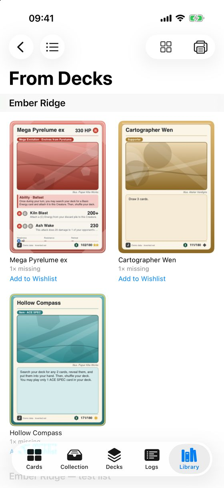
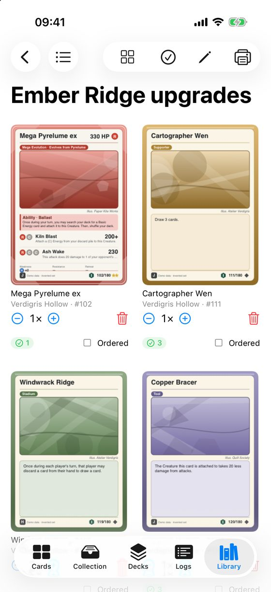
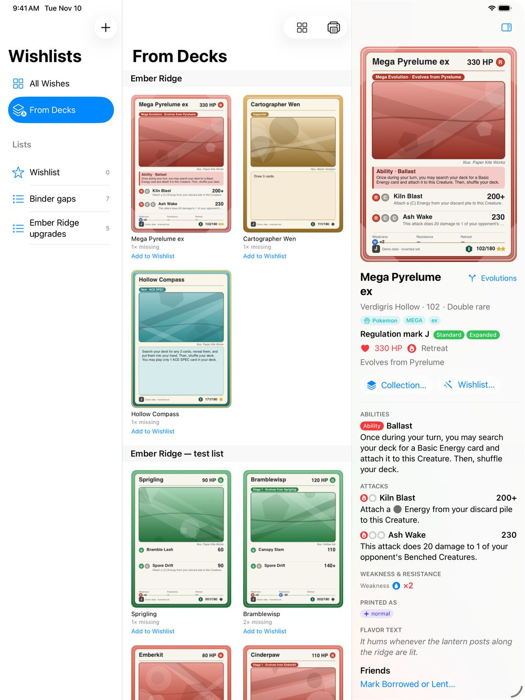

Wishlists and missing cards
A wishlist is a list of cards you still want. From Decks builds one for you from the cards your decks are missing.
Where. iPhone: Library ▸ Wishlists. iPad and Mac: Wishlists in the sidebar.
Three kinds of list
- Your own lists. Tap Add List to make one, for example Binder gaps.
- From Decks. For each deck, the cards it is missing. Under each card, Add to Wishlist copies it onto a list.
- All Wishes. Every wished card, from all lists and from your decks, in one place.


Add a card to a wishlist
- Open the card and tap Wishlist…. The card sheet opens on its Wishlist tab.
- Choose the list and the quantity.
- Tap Save. Unlike the Collection tab, this tab only saves when you tap Save or Done.
On a list, use − and + to change how many you want. The green number is how many you already own.
Mark cards as ordered
When you have bought a card but it has not arrived, turn on Ordered for it. Hide Ordered removes ordered cards from the view, so what is left is what you still need to find.
When the cards arrive
Add them to your collection as described in Record the cards you own, then take them off the list with the bin button.

To take a list to the shop, see Print a wishlist or a deck list.